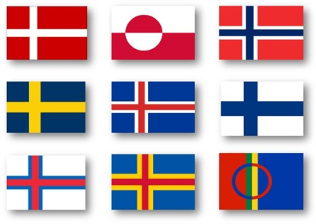

The Nordic Region consists of Denmark, Norway, Sweden, Finland, and Iceland, as well as the Faroe Islands, Greenland, and Åland.
The Nordic countries have much in common in their way of life, history, religion and social structure. They have a long history of political unions and other close relations but do not form a singular entity today. The Scandinavist movement sought to unite Denmark, Norway and Sweden into one country in the 19th century. With the dissolution of the union between Norway and Sweden, the independence of Finland in the early 20th century and the 1944 Icelandic constitutional referendum, this movement expanded into the modern organised Nordic cooperation. Since 1962, this cooperation has been based on the Helsinki Treaty that sets the framework for the Nordic Council and the Nordic Council of Ministers.
The Nordic countries cluster near the top in numerous metrics of national performance, including education, economic competitiveness, civil liberties, quality of life and human development. Each country has its own economic and social model, sometimes with large differences from its neighbours.
Still, they share aspects of the Nordic model of economy and social structure to varying degrees. This includes a mixed market economy combined with strong labour unions and a universalist welfare sector financed by high taxes, enhancing individual autonomy and promoting social mobility. There is a high degree of income redistribution, commitment to private ownership and little social unrest.
Historically, the main religion in the region was Norse paganism. This gave way first to Roman Catholicism after the Christianisation of Scandinavia. Then, following the Protestant Reformation, the main religion became Lutheran Christianity, the state religion of several Nordic countries
In September 2021, the region had over 27 million people. Especially in English, Scandinavia is sometimes used as a synonym for the Nordic countries. Still, that term more properly refers to the three monarchies of Denmark, Norway and Sweden.
History of the Nordic region

Nordic Flags
Since the demise of the Kalmar Union in the early sixteenth century, there has been no single state entity encompassing the entire Nordic region. During the early modern period, the region was dominated by two large composite states – Sweden and Denmark – which rivalled each other for control over the Baltic Sea.
The Danish realm consisted of Jutland and the neighbouring islands, Norway, the duchies of Slesvig and Holsten, and Iceland and the Faroe Islands; while the Swedish realm included, at its furthest extent, all of what is now Finland as well as territories bordering the southern shores of the Baltic Sea.
Both states also acquired for a time modest colonial holdings in the Caribbean, and in the case of Denmark also in India, West Africa and from the 1720s Greenland.
The integration of the early modern kingdoms had important legacies for the later development of the Nordic region, not least in the form of similarities in the administrative and judicial systems of the five Nordic states.
The contours of a modern Nordic region based on five nation states began to take shape during the European wars of the period 1789-1815, but have continued to change during the subsequent two centuries as is shown below.
Nordic language and culture
In the twenty-first century, there has been evidence of strong international interest in several areas of cultural production identified as distinctively ‘Nordic’, such as Nordic design, ‘new Nordic’ cuisine and the ‘Nordic noir’ wave of crime fiction and television drama.
It is generally accepted that the three Scandinavian languages (Danish, Norwegian and Swedish) are very closely related and, in their written forms at least, mutually comprehensible.
This does not apply to Icelandic and Faroese, which are part of the same language group but sufficiently distinctive not to be comprehensible to speakers of the other languages, nor to Finnish or the Sámi languages, which are part of a different language group.
Under the influence of national romanticism and the emerging academic discipline of philology during the nineteenth century, some groups saw these connections as grounds for the establishment of a Scandinavian state consisting of Denmark (including Iceland), Norway and Sweden, a so-called ‘pan’-nationalism that has parallels with later movements for the unification of Italy and Germany.
This was of course not successful, but the notion of a shared Scandinavian culture continues to find some support, stimulated by institutions such as the Nordic Council’s prizes for literature, music and film.
From the late nineteenth century notions of the Nordic or Scandinavian ‘brother peoples’ were also supported by racialist theories popular at the time, which in its more extreme versions came to associate the Nordic region with a distinctive – and sometimes ‘superior’ – Aryan Nordic ‘race’.
Such ideas were rejected after the Second World War and recent research has shown that the inhabitants of the Nordic region are no less diverse in their genetic origins than those living in other parts of Europe.